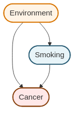
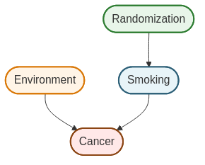
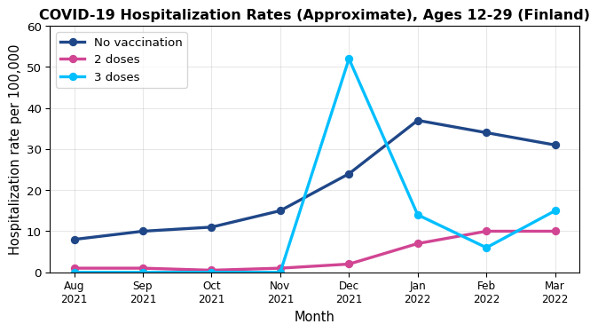
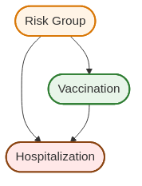

After completing this chapter, you will be able to:
Distinguish observation from intervention and explain why observed associations can differ from causal effects
Understand the fundamental problem of causal inference: we cannot directly observe what would have happened under different treatments
Interpret causal diagrams to identify confounding and understand how randomization eliminates spurious associations
Apply statistical methods to adjust for confounding when estimating causal effects from observational data
Resolve Simpson’s paradox and explain why treatment can benefit all subgroups yet appear harmful overall
Note
This chapter introduces causal inference using the counterfactual (potential outcomes) framework. We also introduce causal graphical models (directed acyclic graphs, or DAGs) as a visual tool for understanding confounding and randomization. The material draws from Wasserman (2013) Chapter 16 and builds on fundamental questions: How do we know if X causes Y? When can we move from observational association to causal claims?
11.2 Introduction: The Causal Question
11.2.1 Does Smoking Cause Lung Cancer?
This question seems obvious now, but establishing causation required decades of careful study. We observe that smokers have higher rates of lung cancer – that’s association. But association alone doesn’t prove causation. Perhaps people with genetic predispositions to cancer also have genetic predispositions to addiction. Perhaps smokers work in different environments with more carcinogens. Perhaps the stress that leads to smoking also damages health.
To claim causation, we need to answer: What would happen if we intervened and made someone smoke (or quit)? This is fundamentally different from just observing who chooses to smoke.
11.2.2 Why Causality Matters: A Cautionary Tale
In the 1980s, doctors noticed that cardiac arrhythmia (irregular heartbeat) was often associated with deaths following heart attacks. This led to a seemingly logical intervention: use medications to suppress arrhythmias and thereby reduce mortality.
The drugs appeared promising in observational studies. Patients who received anti-arrhythmic medications seemed to do better. Based on this evidence, these drugs were widely prescribed.
Then in 1989, the Cardiac Arrhythmia Suppression Trial (CAST) published results from a large randomized controlled trial. The study randomly assigned 1,455 patients to receive either arrhythmia suppressors or placebo.
The result was shocking: The arrhythmia suppressors were actually harmful, leading to higher mortality than placebo. The drugs that appeared beneficial in observational studies were killing patients.
The Danger of Confusing Association with Causation
Why did observational studies mislead? Patients who received anti-arrhythmic drugs differed systematically from those who didn’t – perhaps they had better access to care, more health-conscious behaviors, or different underlying conditions. These confounding factors created a spurious association between drug use and survival that disappeared (and reversed!) under randomization.
Without proper tools for causal inference, we risk making decisions that harm rather than help.
11.2.3 The Operational Definition of Causation
We say that X causes Y if changing X (via intervention) changes the distribution of Y. More precisely:
for some values x \neq x^\prime. This defines what we mean by a causal effect: different interventions produce different outcome distributions.
The notation \text{do}(X=x) represents an intervention – we set X to value x by force, as in a randomized experiment. This is fundamentally different from \mathbb{P}(Y \mid X=x), which describes what we observe when X happens to equal x in nature. In the presence of confounding:
Example: Observational vs. Interventional Probabilities
Let Y = lung cancer, X = smoking status.
\mathbb{P}(Y \mid X=1): The cancer rate among people who choose to smoke
\mathbb{P}(Y \mid \text{do}(X=1)): The cancer rate if we hypothetically forced someone to smoke
These differ because people who choose to smoke may differ from non-smokers in many ways beyond just their smoking status.
Finnish Terminology Reference
For Finnish-speaking students, here’s a reference table of key terms in this chapter:
English
Finnish
Causal inference
Kausaalinen päättely
Causal graphical model
Kausaalinen graafinen malli
Potential outcome
Potentiaalinen vaste
Counterfactual
Kontrafaktuaali
Counterfactual model
Kontrafaktuaalinen malli
Average causal effect (ACE)
Keskimääräinen kausaalivaikutus
Association
Yhteys, assosiaatio
Confounder / Confounding variable
Sekoittaja / Sekoittava muuttuja
Randomized Controlled Trial (RCT)
Satunnaistettu vertailukoe
11.3 A First Tool: Causal Graphical Models
Before diving into the formal counterfactual framework, we introduce a visual tool for thinking about causation: causal graphical models or causal directed acyclic graphs (DAGs).
Scope Note
This section provides a brief introduction to causal DAGs to build intuition about confounding and randomization. For a complete treatment of DAGs including d-separation, the backdoor criterion, and do-calculus, see Pearl (2009). Here we focus on the basic concepts needed to motivate the counterfactual approach.
11.3.1 Causal DAGs: Arrows Mean Causation
In a causal graphical model, nodes represent variables and directed edges (arrows) represent causal relationships. The direction matters: an arrow from X to Y means X causes Y, not that they’re merely associated.
Example: A Simple Causal Graph
The causal relationship between smoking and cancer can be represented as:
This simple graph states that smoking causes cancer. In causal DAGs, unlike non-causal graphical models, the direction of the arrow carries causal meaning.
Aside: Non-Causal Graphical Models
You may have encountered graphical models in probability or machine learning courses. Those are typically non-causal graphical models that merely describe factorizations of joint distributions:
In causal graphical models, the direction matters for interpretation. Smoking → Cancer means smoking causes cancer, which has implications for what happens under interventions. The graphs above are NOT equivalent for causal reasoning.
A More Complex Example: Here’s a larger non-causal graphical model showing a complex factorization which entail a specific statistical dependency structure (but not causal):
where each variable is conditionally independent of its non-descendants given its parents: \mathbb{P}(X_i \mid \text{Pa}(X_i)).
11.3.2 The Problem: Confounding in Causal Graphical Models
The simple smoking → cancer causal graph we saw earlier might be too simple. What if there are other factors that influence both smoking and cancer risk?

Here, Environment (which might represent occupational exposure to carcinogens, socioeconomic status, or other factors) affects both whether someone smokes and whether they develop cancer. Environment is a confounding variable or confounder.
When confounding is present, the observed association \mathbb{P}(\text{Cancer} \mid \text{Smoking}) conflates:
The causal effect of smoking on cancer (the direct arrow)
The spurious association created by the common cause (environment)
This is why \mathbb{P}(Y \mid X) \neq \mathbb{P}(Y \mid \text{do}(X)) in the presence of confounding.
11.3.3 The Solution: Randomization
Randomization solves the confounding problem by introducing an exogenous source of variation:

By randomly assigning smoking status, we break the arrow from Environment to Smoking. Now smoking status is determined by randomization rather than by environmental factors. This makes Smoking independent of Environment, eliminating the spurious association.
This is why randomized controlled trials (RCTs) are the gold standard for causal inference: randomization eliminates confounding by design.
This graphical perspective provides intuition, but we need a formal mathematical framework to define causal effects precisely and derive estimators. That framework is the counterfactual model, which we turn to next.
11.4 The Counterfactual Model
11.4.1 Potential Outcomes: The Fundamental Concept
Consider a binary treatment X \in \{0, 1\} where X=1 means “treated” and X=0 means “not treated.” We use “treatment” broadly – it could mean taking a drug, smoking, receiving job training, or any intervention of interest. Let Y be some outcome we care about, such as health status, income, or test scores.
The key insight of the counterfactual model is to decompose the observed outcome Y into more fine-grained potential outcomes. For each subject, we imagine two possible outcomes:
C_0: The outcome if the subject is not treated (X=0)
C_1: The outcome if the subject is treated (X=1)
These are called potential outcomes or counterfactuals because we can only observe one of them for each subject. The unobserved one is “counter to the fact” – it’s what would have happened in an alternative reality.
Potential Outcomes and the Consistency Relationship
For each subject, we define:
(C_0, C_1): The potential outcomes under no treatment and treatment, respectively
The observed outcome Y relates to potential outcomes via the consistency relationship:
Y = \begin{cases}
C_0 & \text{if } X = 0 \\
C_1 & \text{if } X = 1
\end{cases}
More compactly: Y = C_X.
Interpretation: Each subject has a “type” characterized by their potential outcomes (C_0, C_1). These are fixed properties of the subject – they don’t change based on what treatment we assign. What changes is which potential outcome we get to observe: if treated, we see C_1; if not treated, we see C_0.
11.4.2 An Illustrative Example
Here’s a small dataset to make the idea concrete:
X
Y
C_0
C_1
0
4
4
*
0
7
7
*
0
2
2
*
0
8
8
*
1
3
*
3
1
5
*
5
1
8
*
8
1
9
*
9
The asterisks (*) denote unobserved values. When X=0, we observe C_0 but not C_1. When X=1, we observe C_1 but not C_0. The unobserved potential outcome is counterfactual.
This missingness is the fundamental problem of causal inference: we never observe both C_0 and C_1 for the same subject. We can’t directly compute individual causal effects C_1 - C_0. Instead, we must make assumptions and focus on population-level effects.
11.4.3 Defining Causal Effects and Association
Now we can precisely define what we mean by causal effect and contrast it with association, its non-causal counterpart.
Average Causal Effect (ACE)
The average causal effect or average treatment effect is:
\theta = \mathbb{E}[C_1] - \mathbb{E}[C_0]
This measures the mean of Y if everyone were treated minus the mean if no one were treated.
What Does “Everyone” Mean?
The expectation \mathbb{E}[C_1] is taken over the distribution of subjects in the population. If we index subjects by i, then:
This is the mean outcome if we treated all n subjects (everyone). Similarly, \mathbb{E}[C_0] is the mean if we treated no one. Thus \theta measures the population-average difference in outcomes under universal treatment vs. universal non-treatment.
Equivalently: \theta = \mathbb{E}_i[C_{1i} - C_{0i}], the average of individual treatment effects.
Association
The association between treatment and outcome is a statistical (non-causal) expression:
This is the observed difference in mean outcomes between those who were treated and those who were not.
The crucial question: Are these the same?
In general, \theta \neq \alpha.
Why? Because \alpha compares two different groups of people (those who got treatment vs. those who didn’t), while \theta compares the same population under two different treatment assignments. If the people who get treated differ systematically from those who don’t (selection bias), then \alpha will be biased for \theta.
11.4.4 Example: When Association Misleads
Let’s examine a stark example where treatment has no causal effect (\theta = 0) but appears strongly beneficial (\alpha = 1) due to selection.
Consider a population with binary outcome Y \in \{0, 1\} where 1 means “healthy” and 0 means “sick”. Suppose there are two types of people:
The treatment has no effect! Half the population is healthy, half is sick, and treatment doesn’t change that.
Computing the association (using only the observed data): \begin{align*}
\alpha &= \mathbb{E}[Y \mid X=1] - \mathbb{E}[Y \mid X=0] \\
&= \frac{1+1+1+1}{4} - \frac{0+0+0+0}{4} \\
&= 1 - 0 = 1
\end{align*}
The treatment appears to have a huge positive effect!
What went wrong? The groups are not comparable. Treated subjects were already healthier before treatment. The association \alpha reflects both the (nonexistent) causal effect and the pre-existing difference between groups.
11.4.5 The Policy Trap
Now imagine we see this data, incorrectly interpret the association as causal, and start recommending the treatment to everyone. If people follow our advice, the population might now look like:
X
Y
C_0
C_1
Type
0
0
0
0*
Sick
1
0
0*
0
Sick
1
0
0*
0
Sick
1
0
0*
0
Sick
1
1
1*
1
Healthy
1
1
1*
1
Healthy
1
1
1*
1
Healthy
1
1
1*
1
Healthy
Now most sick people take the treatment (which doesn’t help them). The treated group has 4 successes out of 7 people (mean = 4/7), while the control group has 0 successes out of 1 person (mean = 0). The new association is: \alpha_{\text{new}} = \frac{4}{7} - 0 = \frac{4}{7} \approx 0.57
The association decreased from 1 to 0.57! Our “successful” intervention appears to have made things worse, when in reality the causal effect was always zero. This is exactly what happened with the arrhythmia drugs: a spurious association led to a misguided policy.
The Fundamental Problem
Without additional assumptions or study design features (like randomization), we cannot identify causal effects from observational data alone. The quantities \mathbb{E}[C_1] and \mathbb{E}[C_0] depend on the full (C_0, C_1) distribution, but we only observe Y = C_X for each subject. The “missing data” on counterfactuals cannot be filled in without assumptions.
Let’s compute this example explicitly to see how association and causation can diverge:
import numpy as np# Example 16.2: No causal effect but strong association# Pre-policy population: only healthy people take treatment# 4 sick (C0=C1=0), 4 healthy (C0=C1=1)c0_pre = np.array([0, 0, 0, 0, 1, 1, 1, 1])c1_pre = np.array([0, 0, 0, 0, 1, 1, 1, 1])x_pre = np.array([0, 0, 0, 0, 1, 1, 1, 1]) # Only healthy take treatmenty_pre = np.where(x_pre ==1, c1_pre, c0_pre)# Causal effect (true parameter)theta = np.mean(c1_pre) - np.mean(c0_pre)# Association (observed in pre-policy data)alpha_pre = np.mean(y_pre[x_pre ==1]) - np.mean(y_pre[x_pre ==0])# Post-policy: recommend treatment to everyone, most comply# 1 sick person still doesn't take it, 3 sick + 4 healthy dox_post = np.array([0, 1, 1, 1, 1, 1, 1, 1])y_post = np.where(x_post ==1, c1_pre, c0_pre)# Association in post-policy dataalpha_post = np.mean(y_post[x_post ==1]) - np.mean(y_post[x_post ==0])print(f"True causal effect θ: {theta:.2f}")print(f"Pre-policy association α: {alpha_pre:.2f}")print(f"Post-policy association α: {alpha_post:.2f}")print("\nThe causal effect is always 0, but association varies with selection!")
True causal effect θ: 0.00
Pre-policy association α: 1.00
Post-policy association α: 0.57
The causal effect is always 0, but association varies with selection!
# Example 16.2: No causal effect but strong association# Pre-policy population: only healthy people take treatmentc0_pre <-c(0, 0, 0, 0, 1, 1, 1, 1)c1_pre <-c(0, 0, 0, 0, 1, 1, 1, 1)x_pre <-c(0, 0, 0, 0, 1, 1, 1, 1) # Only healthy take treatmenty_pre <-ifelse(x_pre ==1, c1_pre, c0_pre)# Causal effect (true parameter)theta <-mean(c1_pre) -mean(c0_pre)# Association (observed in pre-policy data)alpha_pre <-mean(y_pre[x_pre ==1]) -mean(y_pre[x_pre ==0])# Post-policy: recommend treatment to everyone, most complyx_post <-c(0, 1, 1, 1, 1, 1, 1, 1)y_post <-ifelse(x_post ==1, c1_pre, c0_pre)# Association in post-policy dataalpha_post <-mean(y_post[x_post ==1]) -mean(y_post[x_post ==0])cat(sprintf("True causal effect θ: %.2f\n", theta))cat(sprintf("Pre-policy association α: %.2f\n", alpha_pre))cat(sprintf("Post-policy association α: %.2f\n", alpha_post))cat("\nThe causal effect is always 0, but association varies with selection!\n")
The calculations make the problem clear: the association we observe (which changes from 1.00 to 0.57 depending on selection) doesn’t reflect the true causal effect (which is always 0). Association depends entirely on who gets treated, not on whether treatment actually works. This is why observational studies can be so misleading and why we need either randomization or strong assumptions to make causal claims.
Summary: The Counterfactual Model for Binary Treatment
Key insight: In general, \theta \neq \alpha due to selection bias. The groups that receive treatment may differ systematically from those that don’t, making simple comparisons misleading.
Next question: When can we identify \theta?
11.5 Identification by Randomization
We’ve seen that association generally differs from causation due to selection bias. The solution is elegant: randomize who gets treated. When treatment is assigned by a randomization mechanism (like a coin flip, random number generator, or lottery), it becomes independent of all subject characteristics, including the potential outcomes. This breaks the link between “type” and treatment, allowing us to identify causal effects.
11.5.1 The Key Result
Suppose X is randomly assigned and that \mathbb{P}(X=0) > 0 and \mathbb{P}(X=1) > 0. Then:
\theta = \alpha
Hence, any consistent estimator of \alpha is a consistent estimator of \theta. In particular, the difference-in-means estimator:
The positivity assumption \mathbb{P}(X=0), \mathbb{P}(X=1) > 0 ensures the conditional expectations in step (2) are well-defined.
The consistency of \widehat{\theta} follows from the law of large numbers: \overline{Y}_1 \xrightarrow{P} \mathbb{E}[Y \mid X=1] and \overline{Y}_0 \xrightarrow{P} \mathbb{E}[Y \mid X=0].
On Treatment Allocation Probabilities
The positivity assumption \mathbb{P}(X=0) > 0 and \mathbb{P}(X=1) > 0 only requires that both groups have some subjects. It does not require equal allocation (50/50 randomization). You could randomize treatment with any probability p \in (0,1) – such as assigning treatment with probability 0.7 (giving 70/30 allocation) or 0.2 (giving 20/80 allocation).
The key requirement is that treatment assignment is independent of potential outcomes, not that group sizes are equal. Equal allocation (50/50) is often used in practice because it maximizes statistical power for a fixed sample size, but it’s not theoretically necessary for identification.
11.5.2 Why Randomization Works: Intuition
Randomization is powerful because it makes the treated and control groups comparable:
Before randomization: People who choose treatment may differ from those who don’t in countless ways (health consciousness, disease severity, access to care, etc.). These differences confound the treatment effect.
After randomization: Treatment is assigned randomly. On average, treated and control groups are balanced on all characteristics – both observed and unobserved. Any remaining differences are just random noise that averages out in large samples.
This is why we can trust RCTs: randomization eliminates selection bias by design, without needing to measure and adjust for confounders.
11.5.3 Standard Errors and Inference
Under randomization, we can estimate the standard error of \widehat{\theta} using familiar formulas. If outcomes are independent across subjects with variances \sigma_1^2 for treated and \sigma_0^2 for control:
We can then construct confidence intervals and test hypotheses using standard methods (e.g., assuming approximate normality for large n by the CLT).
11.5.4 Conditional Causal Effects
Sometimes we’re interested in how treatment effects vary across subgroups. For a covariate Z (e.g., gender, age group), the conditional causal effect is:
In a randomized experiment, randomization ensures X \perp\!\!\!\perp (C_0, C_1) \mid Z as well (treatment is independent of potential outcomes within each level of Z), so:
We estimate \theta_z by computing the difference in means separately within each subgroup.
Example: Estimating Conditional Effects
Suppose we run an RCT of a new teaching method (X=1 for new method, X=0 for traditional) and measure test scores (Y). We want to know if the method works differently for younger vs. older students.
Data Summary (hypothetical):
Age Group (Z)
Treated Mean
Control Mean
Difference (\widehat{\theta}_z)
Young (Z=0)
78
70
+8
Old (Z=1)
82
80
+2
Interpretation: The new method appears more effective for younger students (+8 points) than older students (+2 points). Both groups benefit, but the magnitude differs.
Note that we can estimate these conditional effects because randomization was done within age groups (or at least, randomization ensures balance on age).
11.6 Beyond Binary Treatments
When treatment X is not binary (e.g., drug dosage, pollution exposure, years of education), we extend the counterfactual framework by replacing the pair (C_0, C_1) with a counterfactual functionC(x), where C(x) is the outcome if the subject were assigned treatment level x. The consistency relationship becomes Y = C(X).
Causal vs. Associative Regression Functions
With continuous treatment X:
Causal regression function: \theta(x) = \mathbb{E}[C(x)] (mean outcome if everyone received dose x)
Associative regression function: r(x) = \mathbb{E}[Y \mid X=x] (mean outcome among those who happen to have dose x)
In general, \theta(x) \neq r(x) due to selection. Under random assignment, \theta(x) = r(x).
The same issues arise: people who select higher doses may differ systematically from those who select lower doses, creating spurious associations. Randomization breaks this link, allowing us to identify \theta(x) from observed data.
Example: Flat Causal Function, Spurious Association
Consider four subjects with constant counterfactual functions (treatment has no effect):
Subject
C_i(x)
Observed X_i
Observed Y_i
1
4 (constant)
4.0
4
2
3 (constant)
4.0
3
3
2 (constant)
1.0
2
4
1 (constant)
1.0
1
Each subject’s C_i(x) is flat—changing dose doesn’t change their outcome. The causal function is:
\theta(x) = \frac{4 + 3 + 2 + 1}{4} = 2.5 \text{ for all } x
No causal effect. However, subjects with high C_i select high doses (X=4), while subjects with low C_i select low doses (X=1). This selection creates an association: r(x) appears to increase with x even though \theta(x) is flat. Association without causation.
11.7 Observational Studies and Confounding
Randomized experiments are wonderful but often impossible or unethical. We can’t randomize smoking status. We can’t randomize exposure to pollution. We can’t randomize genetic variants. In these cases, we must work with observational data – data where subjects select their own treatment levels.
As we’ve seen repeatedly, observational associations can be wildly misleading. But under certain assumptions, we can still estimate causal effects by adjusting for confounding. Let’s see how.
11.7.1 A Motivating Case: COVID-19 Vaccination and Hospitalization
In April 2022, Finnish newspaper Helsingin Sanomat reported on COVID-19 vaccine effectiveness. Among 12-29 year olds, the data showed periods where the hospitalization rate appeared higher among triple-vaccinated individuals compared to the unvaccinated or double-vaccinated.1

In December 2021, triple-vaccinated individuals showed higher hospitalization rates (~50 per 100k) than unvaccinated (~20 per 100k). Does this mean the third dose was harmful? Should young people avoid it?
The Confounding Explanation
The problem: The groups were not comparable. Who got the third dose first? Members of at-risk groups – individuals whose risk factors (age, underlying conditions, occupation) made them both more likely to be hospitalized and prioritized for early vaccination.
The comparison \mathbb{P}(\text{hospitalization} \mid \text{triple-vaccinated}) vs. \mathbb{P}(\text{hospitalization} \mid \text{not triple-vaccinated}) conflates:
The causal effect of the vaccine (protective)
The higher baseline risk of those who sought early vaccination (makes vaccinated group look worse)
Without adjusting for risk group membership, we cannot make causal claims.
11.7.2 Confounding Variables
A confounding variable (or confounder) is a variable that affects both treatment and outcome. In our example, risk group membership confounds the vaccine-hospitalization relationship: being in an at-risk group → prioritized for early vaccination, and being in an at-risk group → higher baseline hospitalization risk.
Graphically:

The common cause (Risk Group membership) creates a spurious association between Vaccination and Hospitalization that doesn’t reflect the causal arrow. Risk Group membership affects both who gets vaccinated and who gets hospitalized, confounding the relationship.
11.7.3 Identifying Causal Effects in Observational Studies
When can we identify causal effects from observational data? The key assumption is:
No Unmeasured Confounding (Conditional Ignorability)
Let Z denote a set of measured covariates (potential confounders). We say there is no unmeasured confounding if:
\{C(x): x \in \mathcal{X}\} \perp\!\!\!\perp X \mid Z
That is, conditional on Z, treatment assignment is independent of potential outcomes.
Positivity (Overlap)
Identification also requires positivity: for all values z in the support of Z and all treatment levels x, we need 0 < \mathbb{P}(X=x \mid Z=z) < 1.
In words: within every covariate stratum, all treatment levels must occur with positive probability. Without overlap, we cannot estimate \mathbb{E}(Y \mid X=x, Z=z) in some cells, making the adjustment formula undefined.
Intuition: Within groups of people with the same values of Z (same age, sex, health status, etc.), treatment assignment is “as if random.” There may be unmeasured factors, but they don’t jointly affect treatment and outcomes once we condition on Z.
This is a strong and unverifiable assumption. We can never be certain we’ve measured all confounders. But it’s the best we can do with observational data.
The Adjustment Formula
Under no unmeasured confounding, we can identify the causal regression function:
If \{C(x): x \in \mathcal{X}\} \perp\!\!\!\perp X \mid Z, then:
where \widehat{r}(x, z) is a consistent estimator of \mathbb{E}(Y \mid X=x, Z=z) (e.g., from regression).
The formula for \theta(x) is called the adjusted treatment effect or adjusted causal effect. The process of computing it is called adjusting (or controlling) for confounding.
Proof: Why This Formula Works
By the law of iterated expectations and conditional independence:
\mathbb{E}(Y \mid X=1, Z=1) = 0.10, \mathbb{E}(Y \mid X=0, Z=1) = 0.15 (at-risk: vaccine cuts risk from 15% to 10%)
But at-risk individuals are more likely to get vaccinated: \mathbb{P}(Z=1 \mid X=1) = 0.6, \mathbb{P}(Z=0 \mid X=1) = 0.4, while \mathbb{P}(Z=1 \mid X=0) = 0.2, \mathbb{P}(Z=0 \mid X=0) = 0.8.
The adjusted effect is 0.037 - 0.059 = -0.022 < 0 – vaccination reduces risk by 2.2 percentage points.
The reversal occurs because at-risk individuals (who have higher baseline hospitalization risk) disproportionately get vaccinated, making the vaccinated group look worse on average.
Connection to Linear Regression
When the regression function is linear, \mathbb{E}(Y \mid X=x, Z=z) = \beta_0 + \beta_1 x + \beta_2 z, the adjustment formula simplifies:
\theta(x) = \beta_0 + \beta_1 x + \beta_2 \mathbb{E}[Z]
In practice, we estimate this by running ordinary least squares regression of Y on X and Z (as in Chapter 9). The coefficient \widehat{\beta}_1 estimates the causal effect of X.
This is what people mean by “controlling for” confounders: we’re fitting a linear model and interpreting the treatment coefficient \beta_1 as a causal effect (under the no unmeasured confounding assumption). The simulation below demonstrates this approach.
11.7.4 Practical Considerations: When Can We Trust Observational Studies?
The no unmeasured confounding assumption is untestable. We can never be certain we’ve measured all important confounders. So how do we build confidence in observational causal claims?
Evidence becomes more credible when:
Replication: Multiple independent studies find the same effect.
Comprehensive adjustment: Studies control for many plausible confounders.
Biological plausibility: There’s a scientific mechanism explaining why X would cause Y.
Dose-response: Higher “doses” of X lead to stronger effects.
Temporal precedence: X precedes Y in time (hard to argue reverse causation).
Example: Smoking and lung cancer. The causal claim is credible because:
Hundreds of observational studies in different populations show the association
Studies control for occupation, socioeconomic status, diet, etc.
Laboratory studies show smoking damages lung cells
Animal RCTs confirm carcinogenic effects
There’s a dose-response relationship (more cigarettes → higher risk)
Smoking precedes cancer diagnosis by years
No single observational study proves causation, but the totality of evidence can be compelling.
Residual Confounding and Unmeasured Confounders
Even after controlling for measured confounders, there may be unmeasured confounders we missed. This is called residual confounding.
Example: Even controlling for current health status, we might miss genetic predispositions, past exposures, or subtle behavioral factors that affect both treatment and outcomes.
This is why observational studies must be interpreted with caution and why RCTs remain the gold standard when feasible.
Example: Simulating Confounding and Adjustment
To make this concrete, let’s simulate a confounded observational study. In this example:
X: Treatment status (1 = treated, 0 = not treated)
Y: Health outcome (continuous, higher values are better)
Key Insight: The left panel shows that treated subjects (X=1, orange) have higher Z values – they’re sicker. Because sickness decreases Y (the outcome), the naive comparison makes treatment look less effective or even harmful. The right panel shows that adjusting for Z recovers the true positive effect.
11.8 Simpson’s Paradox
Simpson’s paradox is a puzzling phenomenon where an effect observed in multiple subgroups reverses when the groups are combined. Treatment appears beneficial in every subgroup yet harmful overall, or vice versa. This seems impossible – how can something help everyone yet hurt the population?
The resolution requires causal thinking. Simpson’s paradox arises from conflating conditional associations with causal effects, compounded by differing subgroup compositions.
11.8.1 A Real Example: COVID-19 Vaccination Rates
Let’s look at real data from Finland.2 The table shows COVID-19 vaccination rates (at least one dose) by age group:
Area
5-11 years
12-69 years
70+ years
All ages
Espoo
32.4%
87.3%
97.2%
78.7%
Finland
26.3%
87.0%
96.2%
80.2%
The paradox: Espoo has higher vaccination rates in every age group, yet Finland has a higher overall rate!
The explanation: Population composition differs. Here’s the fraction of each region’s population in each age group:3
Area
5-11 years
12-69 years
70+ years
Espoo
9.0%
74.5%
10.9%
Finland
7.6%
71.4%
16.7%
Espoo has relatively more people in the 5-11 age group (lowest vaccination rate) and fewer in the 70+ group (highest rate). When we compute the overall average, these different mixture weights create the reversal.
Treatment looks harmful marginally (24% vs. 46%), despite helping in both subgroups!
11.8.3 The Counterfactual Resolution
The key insight: statements like “treatment is harmful” should be phrased causally as \mathbb{P}(C_1 = 1) < \mathbb{P}(C_0 = 1), not observationally as \mathbb{P}(Y=1 \mid X=1) < \mathbb{P}(Y=1 \mid X=0).
Suppose treatment is beneficial in all subgroups: for all z,
The resolution: If treatment truly helps in every subgroup (causally), it must help overall (causally). Simpson’s “paradox” only arises when we confuse conditional associations with causal effects. The marginal association can reverse due to different mixture weights, but the causal effect cannot.
Implications for Practice
Simpson’s paradox teaches us:
Beware marginal comparisons in observational data. Groups may differ in crucial ways.
Examine subgroup effects. If treatment helps in all subgroups, suspect confounding if it appears harmful overall.
Report adjusted estimates. Always control for key confounders when making causal claims.
Think causally. Use the language of potential outcomes (C_0, C_1) rather than conditional probabilities alone.
11.9 Chapter Summary and Connections
11.9.1 Key Concepts Review
The Fundamental Challenge: Association \neq Causation. Observational comparisons \mathbb{P}(Y \mid X) conflate causal effects with selection bias. We need \mathbb{P}(Y \mid \text{do}(X)) – the distribution under intervention.
Causal Graphical Models:
DAGs (Directed Acyclic Graphs): Arrows represent causal relationships, not just associations
Confounding: Common causes create spurious associations between treatment and outcome
Randomization: Breaks confounding arrows by making treatment independent of all pre-treatment variables
do-notation: \mathbb{P}(Y \mid \text{do}(X=x)) represents what happens under intervention, distinct from \mathbb{P}(Y \mid X=x)
The Counterfactual Model:
Potential outcomes(C_0, C_1) or C(x): what would happen under different treatments
Consistency: Y = C_X (we observe one potential outcome per subject)
Average Causal Effect: \theta = \mathbb{E}[C_1] - \mathbb{E}[C_0]
Key insight: In general, \theta \neq \alpha due to selection bias
Identification Strategies:
Randomization: Makes X \perp\!\!\!\perp (C_0, C_1), so \theta = \alpha
Difference-in-means estimator \widehat{\theta} = \overline{Y}_1 - \overline{Y}_0 is consistent
Gold standard when feasible (RCTs)
Adjustment for confounding: Requires \{C(x)\} \perp\!\!\!\perp X \mid Z (no unmeasured confounding)
Within strata of Z, treatment is “as if randomized”
Can estimate causal effects via regression controlling for Z
Untestable assumption – requires domain knowledge and careful thought
Simpson’s Paradox: Marginal associations can reverse due to different mixture weights across strata. The resolution: think causally using potential outcomes. If treatment helps in all subgroups (causally), it must help overall (causally). The paradox only arises when confusing conditional associations with causal effects.
11.9.2 The Big Picture
This chapter reveals two fundamental insights about causation:
Correlation is not causation – but we can bridge the gap. The counterfactual framework gives us precise language for defining causal effects and distinguishing them from mere association. We’ve learned that \mathbb{P}(Y \mid X) tells us about correlation, while \mathbb{P}(Y \mid \text{do}(X)) tells us about causation. Understanding this difference is critical for sound scientific reasoning and policy decisions.
Randomization and adjustment are our two paths to causal inference. Randomized experiments eliminate confounding by design, making association equal to causation. When randomization is impossible, we can sometimes identify causal effects by adjusting for measured confounders – but only under strong, untestable assumptions. The tools matter less than understanding when each approach is valid.
The stakes are high: misinterpreting association as causation has led to harmful medical interventions, misguided policies, and wasted resources. The counterfactual model and causal DAGs give us a rigorous framework for avoiding these mistakes and making valid causal claims when the data and assumptions support them.
11.9.3 Common Pitfalls to Avoid
Confusing association with causation: \mathbb{P}(Y \mid X) measures correlation; \mathbb{P}(Y \mid \text{do}(X)) measures causation. Don’t interpret observational associations as causal effects without justification.
Interpreting regression coefficients causally without justification: “Controlling for Z” only identifies causal effects under the no unmeasured confounding assumption – which is untestable.
Assuming you’ve measured all confounders: Just because you adjusted for some confounders doesn’t mean you got them all. Unmeasured confounding is always a threat in observational studies.
Confusing conditional and marginal effects: Simpson’s paradox shows these can disagree. Always examine stratum-specific effects when making causal claims.
Over-interpreting single observational studies: One study is suggestive, not conclusive. Look for replication, plausible mechanisms, and dose-response relationships.
11.9.4 Chapter Connections
Chapters 1-4 (Probability & Random Variables): The counterfactual model uses conditional independence and expectations. Understanding \mathbb{E}[Y \mid X] vs. \mathbb{E}[C(x)] requires careful probabilistic thinking.
Chapters 5-7 (Estimation & Inference): The difference-in-means estimator and regression adjustment use tools we’ve studied (sample means, least squares, standard errors). But now we interpret them causally under specific assumptions.
Chapter 8 (Bayesian Inference): While this chapter takes a frequentist perspective, Bayesian methods are widely used in causal inference for incorporating prior knowledge about confounders and effect sizes.
Chapter 9 (Regression): Linear regression “controlling for” confounders is our workhorse for adjustment. But interpretation changes from association to causation under no unmeasured confounding.
Next (Ch. 12): Missing data analysis. We’ll examine patterns of missingness, multiple imputation methods, and how to conduct valid inference when data is incomplete.
11.9.5 Self-Test Problems
True or False: Association and Causation
True or False: If we observe that \mathbb{E}[Y \mid X=1] > \mathbb{E}[Y \mid X=0], then treatment X must have a positive causal effect on outcome Y.
Solution
False. The association \alpha = \mathbb{E}[Y \mid X=1] - \mathbb{E}[Y \mid X=0] can differ from the causal effect \theta = \mathbb{E}[C_1] - \mathbb{E}[C_0] due to confounding/selection. (Example 16.2 had \alpha = 1 while \theta = 0.)
Exception: Under random assignment (or no unmeasured confounding + positivity), \alpha = \theta.
Computing Association vs. Causation
Consider this small population (full data, including unobserved counterfactuals):
Subject
X
Y
C_0
C_1
1
0
5
5
8
2
0
6
6
9
3
1
7
4
7
4
1
8
5
8
Compute: (a) The causal effect \theta, (b) The association \alpha.
Here \theta \neq \alpha because treated units had lower baseline outcomes (C_0) on average (selection on potential outcomes), so the naive difference understates the causal effect.
Randomization
Why does randomization make \theta = \alpha? Choose the best answer:
Randomization ensures equal sample sizes
Randomization makes treatment independent of potential outcomes
Randomization eliminates all measurement error
Randomization guarantees perfect balance on all covariates
Solution
Answer: b. Randomization makes X \perp\!\!\!\perp (C_0, C_1), so \mathbb{E}[C_1 \mid X=1] = \mathbb{E}[C_1] and \mathbb{E}[C_0 \mid X=0] = \mathbb{E}[C_0], hence \alpha = \theta.
Equal sizes are not required.
Measurement error can remain.
Perfect balance isn’t guaranteed in finite samples; balance holds in expectation.
Identifying Confounders
A study finds that coffee drinkers have higher rates of lung cancer. Which variables might confound this relationship?
Smoking status
Age
Outdoor exercise habits
Both a and b
Solution
Answer: d. Both smoking and age can be confounders because each is plausibly a pre-treatment common cause (or a proxy for one) of coffee consumption (X) and lung cancer (Y): smoking status is typically associated with higher coffee consumption and increases lung cancer risk; age affects coffee habits and cancer risk.
A confounder must affect (or stand in for causes of) both treatment and outcome and be measured pre-treatment. Outdoor exercise (c) would only confound if it causally affected both coffee consumption and lung cancer risk.
Simpson’s Paradox Interpretation
A drug appears harmful overall (\mathbb{P}(Y=1 \mid X=1) < \mathbb{P}(Y=1 \mid X=0)) but beneficial in both men (Z=1) and women (Z=0). Does this mean the drug is truly harmful?
Solution
No. The marginal association can reverse due to different subgroup proportions. If the drug is causally beneficial in each subgroup—i.e., \mathbb{P}(C_1=1 \mid Z=z) > \mathbb{P}(C_0=1 \mid Z=z) for all z—then it is beneficial overall: \mathbb{P}(C_1=1) > \mathbb{P}(C_0=1). The paradox arises from confusing associations\mathbb{P}(Y \mid X) with causal statements about potential outcomes.
# Assumes: binary treatment (0/1), positivity; for adjusted_effect: no unmeasured confoundingimport numpy as npimport pandas as pdimport statsmodels.formula.api as smf# Difference-in-means estimator for binary treatmentdef diff_in_means(y, x):""" Estimate ACE via difference in means. Parameters: ----------- y : array-like, outcome variable x : array-like, binary treatment (0/1) Returns: -------- ace : float, estimated average causal effect se : float, standard error """ y1 = y[x ==1] y0 = y[x ==0] ace = np.mean(y1) - np.mean(y0)# Standard error n1 =len(y1) n0 =len(y0) var1 = np.var(y1, ddof=1) var0 = np.var(y0, ddof=1) se = np.sqrt(var1/n1 + var0/n0)return ace, se# Adjustment via regressiondef adjusted_effect(y, x, z):""" Estimate ACE adjusting for confounders via regression. Parameters: ----------- y : array-like, outcome x : array-like, binary treatment (0/1) z : array-like, confounders (1D array) Returns: -------- ace : float, standardized average causal effect """# Fit regression model df = pd.DataFrame({'y': y, 'x': x, 'z': z}) model = smf.ols('y ~ x + z', data=df).fit()# Standardization (matches the identification formula) df_x1 = df.copy() df_x1['x'] =1 df_x0 = df.copy() df_x0['x'] =0 ace = np.mean(model.predict(df_x1) - model.predict(df_x0))return ace
# Assumes: binary treatment (0/1), positivity; for adjusted_effect: no unmeasured confounding# Difference-in-means estimatordiff_in_means <-function(y, x) {# Estimate ACE via difference in means y1 <- y[x ==1] y0 <- y[x ==0] ace <-mean(y1) -mean(y0)# Standard error n1 <-length(y1) n0 <-length(y0) var1 <-var(y1) var0 <-var(y0) se <-sqrt(var1/n1 + var0/n0)list(ace = ace, se = se)}# Adjustment via regressionadjusted_effect <-function(y, x, z) {# Estimate ACE adjusting for confounders via regression# Fit regression Y ~ X + Z data <-data.frame(y = y, x = x, z = z) model <-lm(y ~ x + z, data = data)# Standardization (matches the identification formula) data_x1 <- data_x0 <- data data_x1$x <-1 data_x0$x <-0mean(predict(model, data_x1) -predict(model, data_x0))}
Remember: Correlation is not causation, but with the right tools – randomization or credible adjustment for confounding – we can move from association to causal claims. Always state your assumptions clearly and interpret results cautiously.
Pearl, Judea. 2009. Causality: Models, Reasoning, and Inference. 2nd ed. Cambridge: Cambridge University Press.
Wasserman, Larry. 2013. All of Statistics: A Concise Course in Statistical Inference. Springer Science & Business Media.
The illustration below uses data from Helsingin Sanomat, 22 April 2022.↩︎
Data from Helsingin Sanomat, updated on 20 April 2022.↩︎
---date: today---# Causal Inference## Learning ObjectivesAfter completing this chapter, you will be able to:- **Distinguish observation from intervention** and explain why observed associations can differ from causal effects- **Understand the fundamental problem of causal inference**: we cannot directly observe what would have happened under different treatments- **Interpret causal diagrams to identify confounding** and understand how randomization eliminates spurious associations- **Apply statistical methods to adjust for confounding** when estimating causal effects from observational data- **Resolve Simpson's paradox** and explain why treatment can benefit all subgroups yet appear harmful overall::: {.callout-note}This chapter introduces **causal inference using the counterfactual (potential outcomes) framework**. We also introduce causal graphical models (directed acyclic graphs, or DAGs) as a visual tool for understanding confounding and randomization. The material draws from @wasserman2013all Chapter 16 and builds on fundamental questions: How do we know if $X$ causes $Y$? When can we move from observational association to causal claims?:::## Introduction: The Causal Question### Does Smoking Cause Lung Cancer?This question seems obvious now, but establishing causation required decades of careful study. We observe that smokers have higher rates of lung cancer -- that's **association**. But association alone doesn't prove causation. Perhaps people with genetic predispositions to cancer also have genetic predispositions to addiction. Perhaps smokers work in different environments with more carcinogens. Perhaps the stress that leads to smoking also damages health.To claim causation, we need to answer: **What would happen if we intervened** and made someone smoke (or quit)? This is fundamentally different from just observing who chooses to smoke.### Why Causality Matters: A Cautionary TaleIn the 1980s, doctors noticed that cardiac arrhythmia (irregular heartbeat) was often associated with deaths following heart attacks. This led to a seemingly logical intervention: use medications to suppress arrhythmias and thereby reduce mortality.The drugs appeared promising in observational studies. Patients who received anti-arrhythmic medications seemed to do better. Based on this evidence, these drugs were widely prescribed.Then in 1989, the Cardiac Arrhythmia Suppression Trial (CAST) published results from a large randomized controlled trial. The study randomly assigned 1,455 patients to receive either arrhythmia suppressors or placebo.**The result was shocking**: The arrhythmia suppressors were actually harmful, leading to *higher* mortality than placebo. The drugs that appeared beneficial in observational studies were killing patients.::: {.callout-warning}## The Danger of Confusing Association with CausationWhy did observational studies mislead? Patients who received anti-arrhythmic drugs differed systematically from those who didn't -- perhaps they had better access to care, more health-conscious behaviors, or different underlying conditions. These **confounding factors** created a spurious association between drug use and survival that disappeared (and reversed!) under randomization.Without proper tools for causal inference, we risk making decisions that harm rather than help.:::### The Operational Definition of CausationWe say that **$X$ causes $Y$** if changing $X$ (via intervention) changes the distribution of $Y$. More precisely:$$\mathbb{P}(Y \mid \text{do}(X=x)) \neq \mathbb{P}(Y \mid \text{do}(X=x^\prime))$$for some values $x \neq x^\prime$. This defines what we mean by a causal effect: different interventions produce different outcome distributions.The notation $\text{do}(X=x)$ represents an **intervention** -- we set $X$ to value $x$ by force, as in a randomized experiment. This is fundamentally different from $\mathbb{P}(Y \mid X=x)$, which describes what we observe when $X$ happens to equal $x$ in nature. In the presence of confounding:$$\mathbb{P}(Y \mid \text{do}(X=x)) \neq \mathbb{P}(Y \mid X=x)$$::: {.callout-tip icon=false}## Example: Observational vs. Interventional ProbabilitiesLet $Y$ = lung cancer, $X$ = smoking status.- $\mathbb{P}(Y \mid X=1)$: The cancer rate among people who choose to smoke- $\mathbb{P}(Y \mid \text{do}(X=1))$: The cancer rate if we hypothetically forced someone to smokeThese differ because people who choose to smoke may differ from non-smokers in many ways beyond just their smoking status.:::::: {.callout-note collapse="true"}## Finnish Terminology ReferenceFor Finnish-speaking students, here's a reference table of key terms in this chapter:| English | Finnish ||---------|---------|| Causal inference | Kausaalinen päättely || Causal graphical model | Kausaalinen graafinen malli || Potential outcome | Potentiaalinen vaste || Counterfactual | Kontrafaktuaali || Counterfactual model | Kontrafaktuaalinen malli || Average causal effect (ACE) | Keskimääräinen kausaalivaikutus || Association | Yhteys, assosiaatio || Confounder / Confounding variable | Sekoittaja / Sekoittava muuttuja || Randomized Controlled Trial (RCT) | Satunnaistettu vertailukoe |:::## A First Tool: Causal Graphical ModelsBefore diving into the formal counterfactual framework, we introduce a visual tool for thinking about causation: **causal graphical models** or **causal directed acyclic graphs (DAGs)**.::: {.callout-note}## Scope NoteThis section provides a brief introduction to causal DAGs to build intuition about confounding and randomization. For a complete treatment of DAGs including d-separation, the backdoor criterion, and do-calculus, see @pearl2000causality. Here we focus on the basic concepts needed to motivate the counterfactual approach.:::### Causal DAGs: Arrows Mean CausationIn a **causal graphical model**, nodes represent variables and directed edges (arrows) represent causal relationships. The direction matters: an arrow from $X$ to $Y$ means $X$ causes $Y$, not that they're merely associated.::: {.callout-tip icon=false}## Example: A Simple Causal GraphThe causal relationship between smoking and cancer can be represented as:{width=250px fig-align="center"}This simple graph states that smoking causes cancer. In causal DAGs, unlike non-causal graphical models, the direction of the arrow carries causal meaning.:::::: {.callout-note collapse="false"}## Aside: Non-Causal Graphical ModelsYou may have encountered graphical models in probability or machine learning courses. Those are typically **non-causal graphical models** that merely describe factorizations of joint distributions:$$\mathbb{P}(X_1, \ldots, X_n) = \prod_{i=1}^n \mathbb{P}(X_i \mid \text{Pa}(X_i))$$where $\text{Pa}(X_i)$ denotes the parents of $X_i$ in the graph.In non-causal models, these two graphs are equivalent (they represent the same joint distribution):::: {layout-ncol=2}{width=250px}{width=250px}:::Both factorize $\mathbb{P}(\text{Smoking}, \text{Cancer})$ as a product of two factors; only the roles of conditional and marginal are swapped:- Left: $\mathbb{P}(\text{Smoking}, \text{Cancer}) = \mathbb{P}(\text{Cancer} \mid \text{Smoking}) \mathbb{P}(\text{Smoking})$- Right: $\mathbb{P}(\text{Smoking}, \text{Cancer}) = \mathbb{P}(\text{Smoking} \mid \text{Cancer}) \mathbb{P}(\text{Cancer})$In **causal** graphical models, the direction matters for interpretation. Smoking → Cancer means smoking causes cancer, which has implications for what happens under interventions. The graphs above are NOT equivalent for causal reasoning.**A More Complex Example**: Here's a larger non-causal graphical model showing a complex factorization which entail a specific statistical dependency structure (but **not causal**):{width=300px fig-align="center"}This graph represents the factorization:$$\mathbb{P}(X_1, X_2, X_3, X_4, X_5) = \mathbb{P}(X_1) \, \mathbb{P}(X_2 \mid X_1) \, \mathbb{P}(X_3 \mid X_1) \, \mathbb{P}(X_4 \mid X_2) \, \mathbb{P}(X_5 \mid X_2, X_3)$$where each variable is conditionally independent of its non-descendants given its parents: $\mathbb{P}(X_i \mid \text{Pa}(X_i))$.:::### The Problem: Confounding in Causal Graphical ModelsThe simple smoking → cancer causal graph we saw earlier might be too simple. What if there are other factors that influence both smoking and cancer risk?{width=200px fig-align="center"}Here, **Environment** (which might represent occupational exposure to carcinogens, socioeconomic status, or other factors) affects both whether someone smokes and whether they develop cancer. Environment is a **confounding variable** or **confounder**.When confounding is present, the observed association $\mathbb{P}(\text{Cancer} \mid \text{Smoking})$ conflates:1. The causal effect of smoking on cancer (the direct arrow)2. The spurious association created by the common cause (environment)This is why $\mathbb{P}(Y \mid X) \neq \mathbb{P}(Y \mid \text{do}(X))$ in the presence of confounding.### The Solution: RandomizationRandomization solves the confounding problem by introducing an exogenous source of variation:{width=300px fig-align="center"}By randomly assigning smoking status, we **break the arrow** from Environment to Smoking. Now smoking status is determined by randomization rather than by environmental factors. This makes Smoking independent of Environment, eliminating the spurious association.This is why **randomized controlled trials (RCTs)** are the gold standard for causal inference: randomization eliminates confounding by design.This graphical perspective provides intuition, but we need a formal mathematical framework to define causal effects precisely and derive estimators. That framework is the **counterfactual model**, which we turn to next.## The Counterfactual Model### Potential Outcomes: The Fundamental ConceptConsider a binary treatment $X \in \{0, 1\}$ where $X=1$ means "treated" and $X=0$ means "not treated." We use "treatment" broadly -- it could mean taking a drug, smoking, receiving job training, or any intervention of interest. Let $Y$ be some outcome we care about, such as health status, income, or test scores.The key insight of the counterfactual model is to decompose the observed outcome $Y$ into more fine-grained **potential outcomes**. For each subject, we imagine two possible outcomes:- $C_0$: The outcome if the subject is **not** treated ($X=0$)- $C_1$: The outcome if the subject **is** treated ($X=1$)These are called **potential outcomes** or **counterfactuals** because we can only observe one of them for each subject. The unobserved one is "counter to the fact" -- it's what would have happened in an alternative reality.::: {.definition}**Potential Outcomes and the Consistency Relationship**For each subject, we define:- $(C_0, C_1)$: The **potential outcomes** under no treatment and treatment, respectively- The observed outcome $Y$ relates to potential outcomes via the **consistency relationship**:$$Y = \begin{cases}C_0 & \text{if } X = 0 \\C_1 & \text{if } X = 1\end{cases}$$More compactly: $Y = C_X$.:::**Interpretation**: Each subject has a "type" characterized by their potential outcomes $(C_0, C_1)$. These are **fixed properties** of the subject -- they don't change based on what treatment we assign. What changes is which potential outcome we get to observe: if treated, we see $C_1$; if not treated, we see $C_0$.### An Illustrative ExampleHere's a small dataset to make the idea concrete:| $X$ | $Y$ | $C_0$ | $C_1$ ||:---:|:---:|:-----:|:-----:|| 0 | 4 | 4 | * || 0 | 7 | 7 | * || 0 | 2 | 2 | * || 0 | 8 | 8 | * || 1 | 3 | * | 3 || 1 | 5 | * | 5 || 1 | 8 | * | 8 || 1 | 9 | * | 9 |The asterisks (*) denote **unobserved** values. When $X=0$, we observe $C_0$ but not $C_1$. When $X=1$, we observe $C_1$ but not $C_0$. The unobserved potential outcome is counterfactual.This missingness is the fundamental problem of causal inference: **we never observe both $C_0$ and $C_1$ for the same subject**. We can't directly compute individual causal effects $C_1 - C_0$. Instead, we must make assumptions and focus on population-level effects.### Defining Causal Effects and AssociationNow we can precisely define what we mean by **causal effect** and contrast it with **association**, its non-causal counterpart.::: {.definition}**Average Causal Effect (ACE)**The **average causal effect** or **average treatment effect** is:$$\theta = \mathbb{E}[C_1] - \mathbb{E}[C_0]$$This measures the mean of $Y$ if *everyone* were treated minus the mean if *no one* were treated.:::::: {.callout-note collapse="true"}## What Does "Everyone" Mean?The expectation $\mathbb{E}[C_1]$ is taken over the **distribution of subjects** in the population. If we index subjects by $i$, then:$$\mathbb{E}[C_1] = \mathbb{E}_i[C_{1i}] = \frac{1}{n}\sum_{i=1}^n C_{1i}$$This is the mean outcome if we treated **all $n$ subjects** (everyone). Similarly, $\mathbb{E}[C_0]$ is the mean if we treated **no one**. Thus $\theta$ measures the population-average difference in outcomes under universal treatment vs. universal non-treatment.Equivalently: $\theta = \mathbb{E}_i[C_{1i} - C_{0i}]$, the average of individual treatment effects.:::::: {.definition}**Association**The **association** between treatment and outcome is a statistical (non-causal) expression:$$\alpha = \mathbb{E}[Y \mid X=1] - \mathbb{E}[Y \mid X=0]$$This is the observed difference in mean outcomes between those who were treated and those who were not.:::The crucial question: Are these the same?::: {.theorem name="Association Is Not Causation"}In general, $\theta \neq \alpha$.:::Why? Because $\alpha$ compares two different groups of people (those who got treatment vs. those who didn't), while $\theta$ compares the same population under two different treatment assignments. If the people who get treated differ systematically from those who don't (selection bias), then $\alpha$ will be biased for $\theta$.### Example: When Association MisleadsLet's examine a stark example where treatment has **no causal effect** ($\theta = 0$) but appears strongly beneficial ($\alpha = 1$) due to selection.Consider a population with binary outcome $Y \in \{0, 1\}$ where 1 means "healthy" and 0 means "sick". Suppose there are two types of people:- **Healthy type**: $(C_0, C_1) = (1, 1)$ -- healthy regardless of treatment- **Sick type**: $(C_0, C_1) = (0, 0)$ -- sick regardless of treatmentThe treatment does nothing! However, suppose only healthy people choose to take the treatment:| $X$ | $Y$ | $C_0$ | $C_1$ | Type ||:---:|:---:|:-----:|:-----:|:-----|| 0 | 0 | 0 | 0* | Sick || 0 | 0 | 0 | 0* | Sick || 0 | 0 | 0 | 0* | Sick || 0 | 0 | 0 | 0* | Sick || 1 | 1 | 1* | 1 | Healthy || 1 | 1 | 1* | 1 | Healthy || 1 | 1 | 1* | 1 | Healthy || 1 | 1 | 1* | 1 | Healthy |**Computing the causal effect**:\begin{align*}\theta &= \mathbb{E}[C_1] - \mathbb{E}[C_0]\\ &= \frac{0+0+0+0+1+1+1+1}{8} - \frac{0+0+0+0+1+1+1+1}{8} \\ &= \frac{4}{8} - \frac{4}{8} = 0\end{align*}The treatment has no effect! Half the population is healthy, half is sick, and treatment doesn't change that.**Computing the association** (using only the observed data):\begin{align*}\alpha &= \mathbb{E}[Y \mid X=1] - \mathbb{E}[Y \mid X=0]\\ &= \frac{1+1+1+1}{4} - \frac{0+0+0+0}{4} \\ &= 1 - 0 = 1\end{align*}The treatment appears to have a huge positive effect!**What went wrong?** The groups are not comparable. Treated subjects were already healthier *before* treatment. The association $\alpha$ reflects both the (nonexistent) causal effect and the pre-existing difference between groups.### The Policy TrapNow imagine we see this data, incorrectly interpret the association as causal, and start recommending the treatment to everyone. If people follow our advice, the population might now look like:| $X$ | $Y$ | $C_0$ | $C_1$ | Type ||:---:|:---:|:-----:|:-----:|:-----|| 0 | 0 | 0 | 0* | Sick || 1 | 0 | 0* | 0 | Sick || 1 | 0 | 0* | 0 | Sick || 1 | 0 | 0* | 0 | Sick || 1 | 1 | 1* | 1 | Healthy || 1 | 1 | 1* | 1 | Healthy || 1 | 1 | 1* | 1 | Healthy || 1 | 1 | 1* | 1 | Healthy |Now most sick people take the treatment (which doesn't help them). The treated group has 4 successes out of 7 people (mean = 4/7), while the control group has 0 successes out of 1 person (mean = 0). The new association is:$$\alpha_{\text{new}} = \frac{4}{7} - 0 = \frac{4}{7} \approx 0.57$$The association decreased from 1 to 0.57! Our "successful" intervention appears to have made things worse, when in reality the causal effect was always zero. This is exactly what happened with the arrhythmia drugs: a spurious association led to a misguided policy.::: {.callout-warning}## The Fundamental ProblemWithout additional assumptions or study design features (like randomization), we cannot identify causal effects from observational data alone. The quantities $\mathbb{E}[C_1]$ and $\mathbb{E}[C_0]$ depend on the full $(C_0, C_1)$ distribution, but we only observe $Y = C_X$ for each subject. The "missing data" on counterfactuals cannot be filled in without assumptions.:::Let's compute this example explicitly to see how association and causation can diverge:::: {.tabbed-content}## Python```{python}#| echo: trueimport numpy as np# Example 16.2: No causal effect but strong association# Pre-policy population: only healthy people take treatment# 4 sick (C0=C1=0), 4 healthy (C0=C1=1)c0_pre = np.array([0, 0, 0, 0, 1, 1, 1, 1])c1_pre = np.array([0, 0, 0, 0, 1, 1, 1, 1])x_pre = np.array([0, 0, 0, 0, 1, 1, 1, 1]) # Only healthy take treatmenty_pre = np.where(x_pre ==1, c1_pre, c0_pre)# Causal effect (true parameter)theta = np.mean(c1_pre) - np.mean(c0_pre)# Association (observed in pre-policy data)alpha_pre = np.mean(y_pre[x_pre ==1]) - np.mean(y_pre[x_pre ==0])# Post-policy: recommend treatment to everyone, most comply# 1 sick person still doesn't take it, 3 sick + 4 healthy dox_post = np.array([0, 1, 1, 1, 1, 1, 1, 1])y_post = np.where(x_post ==1, c1_pre, c0_pre)# Association in post-policy dataalpha_post = np.mean(y_post[x_post ==1]) - np.mean(y_post[x_post ==0])print(f"True causal effect θ: {theta:.2f}")print(f"Pre-policy association α: {alpha_pre:.2f}")print(f"Post-policy association α: {alpha_post:.2f}")print("\nThe causal effect is always 0, but association varies with selection!")```## R```r# Example 16.2: No causal effect but strong association# Pre-policy population: only healthy people take treatmentc0_pre <-c(0, 0, 0, 0, 1, 1, 1, 1)c1_pre <-c(0, 0, 0, 0, 1, 1, 1, 1)x_pre <-c(0, 0, 0, 0, 1, 1, 1, 1) # Only healthy take treatmenty_pre <-ifelse(x_pre ==1, c1_pre, c0_pre)# Causal effect (true parameter)theta <-mean(c1_pre) -mean(c0_pre)# Association (observed in pre-policy data)alpha_pre <-mean(y_pre[x_pre ==1]) -mean(y_pre[x_pre ==0])# Post-policy: recommend treatment to everyone, most complyx_post <-c(0, 1, 1, 1, 1, 1, 1, 1)y_post <-ifelse(x_post ==1, c1_pre, c0_pre)# Association in post-policy dataalpha_post <-mean(y_post[x_post ==1]) -mean(y_post[x_post ==0])cat(sprintf("True causal effect θ: %.2f\n", theta))cat(sprintf("Pre-policy association α: %.2f\n", alpha_pre))cat(sprintf("Post-policy association α: %.2f\n", alpha_post))cat("\nThe causal effect is always 0, but association varies with selection!\n")```:::The calculations make the problem clear: the association we observe (which changes from 1.00 to 0.57 depending on selection) doesn't reflect the true causal effect (which is always 0). Association depends entirely on **who gets treated**, not on whether treatment actually works. This is why observational studies can be so misleading and why we need either randomization or strong assumptions to make causal claims.::: {.callout-note}## Summary: The Counterfactual Model for Binary Treatment**Random variables**: $(C_0, C_1, X, Y)$**Consistency relationship**: $Y = C_X$**Causal effect (ACE)**: $\theta = \mathbb{E}[C_1] - \mathbb{E}[C_0]$**Association**: $\alpha = \mathbb{E}[Y \mid X=1] - \mathbb{E}[Y \mid X=0]$**Key insight**: In general, $\theta \neq \alpha$ due to selection bias. The groups that receive treatment may differ systematically from those that don't, making simple comparisons misleading.**Next question**: When *can* we identify $\theta$?:::## Identification by RandomizationWe've seen that association generally differs from causation due to selection bias. The solution is elegant: **randomize who gets treated**. When treatment is assigned by a randomization mechanism (like a coin flip, random number generator, or lottery), it becomes independent of all subject characteristics, including the potential outcomes. This breaks the link between "type" and treatment, allowing us to identify causal effects.### The Key Result::: {.theorem name="Randomization Identifies the ACE"}Suppose $X$ is randomly assigned and that $\mathbb{P}(X=0) > 0$ and $\mathbb{P}(X=1) > 0$. Then:$$\theta = \alpha$$Hence, any consistent estimator of $\alpha$ is a consistent estimator of $\theta$. In particular, the **difference-in-means estimator**:$$\widehat{\theta} = \overline{Y}_1 - \overline{Y}_0$$is consistent for $\theta$, where:$$\overline{Y}_1 = \frac{1}{n_1} \sum_{i=1}^n Y_i X_i, \quad \overline{Y}_0 = \frac{1}{n_0} \sum_{i=1}^n Y_i (1-X_i)$$with $n_1 = \sum_{i=1}^n X_i$ and $n_0 = \sum_{i=1}^n (1-X_i)$.:::**Proof sketch**: Since $X$ is randomly assigned, it is independent of the potential outcomes: $X \perp\!\!\!\perp (C_0, C_1)$. Therefore:\begin{align}\theta &= \mathbb{E}[C_1] - \mathbb{E}[C_0]\\ &= \mathbb{E}[C_1 \mid X=1] - \mathbb{E}[C_0 \mid X=0] \quad \text{(by independence)} \\ &= \mathbb{E}[Y \mid X=1] - \mathbb{E}[Y \mid X=0] \quad \text{(by consistency: } Y = C_X \text{)} \\ &= \alpha\end{align}The positivity assumption $\mathbb{P}(X=0), \mathbb{P}(X=1) > 0$ ensures the conditional expectations in step (2) are well-defined.The consistency of $\widehat{\theta}$ follows from the law of large numbers: $\overline{Y}_1 \xrightarrow{P} \mathbb{E}[Y \mid X=1]$ and $\overline{Y}_0 \xrightarrow{P} \mathbb{E}[Y \mid X=0]$.::: {.callout-note collapse="true"}## On Treatment Allocation ProbabilitiesThe positivity assumption $\mathbb{P}(X=0) > 0$ and $\mathbb{P}(X=1) > 0$ only requires that both groups have *some* subjects. It does **not** require equal allocation (50/50 randomization). You could randomize treatment with any probability $p \in (0,1)$ -- such as assigning treatment with probability 0.7 (giving 70/30 allocation) or 0.2 (giving 20/80 allocation).The key requirement is that treatment assignment is **independent** of potential outcomes, not that group sizes are equal. Equal allocation (50/50) is often used in practice because it maximizes statistical power for a fixed sample size, but it's not theoretically necessary for identification.:::### Why Randomization Works: IntuitionRandomization is powerful because it makes the treated and control groups **comparable**:- **Before randomization**: People who choose treatment may differ from those who don't in countless ways (health consciousness, disease severity, access to care, etc.). These differences confound the treatment effect.- **After randomization**: Treatment is assigned randomly. On average, treated and control groups are balanced on all characteristics -- both observed and unobserved. Any remaining differences are just random noise that averages out in large samples.This is why we can trust RCTs: randomization eliminates selection bias by design, without needing to measure and adjust for confounders.### Standard Errors and InferenceUnder randomization, we can estimate the standard error of $\widehat{\theta}$ using familiar formulas. If outcomes are independent across subjects with variances $\sigma_1^2$ for treated and $\sigma_0^2$ for control:$$\text{SE}(\widehat{\theta}) = \sqrt{\frac{\sigma_1^2}{n_1} + \frac{\sigma_0^2}{n_0}}$$In practice, we estimate $\sigma_1^2$ and $\sigma_0^2$ with sample variances:$$\widehat{\text{SE}}(\widehat{\theta}) = \sqrt{\frac{s_1^2}{n_1} + \frac{s_0^2}{n_0}}$$We can then construct confidence intervals and test hypotheses using standard methods (e.g., assuming approximate normality for large $n$ by the CLT).### Conditional Causal EffectsSometimes we're interested in how treatment effects vary across subgroups. For a covariate $Z$ (e.g., gender, age group), the **conditional causal effect** is:$$\theta_z = \mathbb{E}[C_1 \mid Z=z] - \mathbb{E}[C_0 \mid Z=z]$$In a randomized experiment, randomization ensures $X \perp\!\!\!\perp (C_0, C_1) \mid Z$ as well (treatment is independent of potential outcomes within each level of $Z$), so:$$\theta_z = \mathbb{E}[Y \mid X=1, Z=z] - \mathbb{E}[Y \mid X=0, Z=z]$$We estimate $\theta_z$ by computing the difference in means separately within each subgroup.::: {.callout-tip icon=false}## Example: Estimating Conditional EffectsSuppose we run an RCT of a new teaching method ($X=1$ for new method, $X=0$ for traditional) and measure test scores ($Y$). We want to know if the method works differently for younger vs. older students.**Data Summary** (hypothetical):| Age Group ($Z$) | Treated Mean | Control Mean | Difference ($\widehat{\theta}_z$) ||:----------------|-------------:|-------------:|----------------------------------:|| Young ($Z=0$) | 78 | 70 | +8 || Old ($Z=1$) | 82 | 80 | +2 |**Interpretation**: The new method appears more effective for younger students (+8 points) than older students (+2 points). Both groups benefit, but the magnitude differs.Note that we can estimate these conditional effects because randomization was done within age groups (or at least, randomization ensures balance on age).:::## Beyond Binary TreatmentsWhen treatment $X$ is not binary (e.g., drug dosage, pollution exposure, years of education), we extend the counterfactual framework by replacing the pair $(C_0, C_1)$ with a **counterfactual function** $C(x)$, where $C(x)$ is the outcome if the subject were assigned treatment level $x$. The consistency relationship becomes $Y = C(X)$.::: {.definition}**Causal vs. Associative Regression Functions**With continuous treatment $X$:- **Causal regression function**: $\theta(x) = \mathbb{E}[C(x)]$ (mean outcome if everyone received dose $x$)- **Associative regression function**: $r(x) = \mathbb{E}[Y \mid X=x]$ (mean outcome among those who happen to have dose $x$)In general, $\theta(x) \neq r(x)$ due to selection. Under random assignment, $\theta(x) = r(x)$.:::The same issues arise: people who select higher doses may differ systematically from those who select lower doses, creating spurious associations. Randomization breaks this link, allowing us to identify $\theta(x)$ from observed data.::: {.callout-tip icon=false collapse="true"}## Example: Flat Causal Function, Spurious AssociationConsider four subjects with constant counterfactual functions (treatment has no effect):| Subject | $C_i(x)$ | Observed $X_i$ | Observed $Y_i$ ||:--------|:---------|:--------------:|:--------------:|| 1 | 4 (constant) | 4.0 | 4 || 2 | 3 (constant) | 4.0 | 3 || 3 | 2 (constant) | 1.0 | 2 || 4 | 1 (constant) | 1.0 | 1 |Each subject's $C_i(x)$ is flat—changing dose doesn't change their outcome. The causal function is:$$\theta(x) = \frac{4 + 3 + 2 + 1}{4} = 2.5 \text{ for all } x$$No causal effect. However, subjects with high $C_i$ select high doses ($X=4$), while subjects with low $C_i$ select low doses ($X=1$). This selection creates an association: $r(x)$ appears to increase with $x$ even though $\theta(x)$ is flat. Association without causation.:::## Observational Studies and ConfoundingRandomized experiments are wonderful but often impossible or unethical. We can't randomize smoking status. We can't randomize exposure to pollution. We can't randomize genetic variants. In these cases, we must work with **observational data** -- data where subjects select their own treatment levels.As we've seen repeatedly, observational associations can be wildly misleading. But under certain assumptions, we can still estimate causal effects by **adjusting for confounding**. Let's see how.### A Motivating Case: COVID-19 Vaccination and HospitalizationIn April 2022, Finnish newspaper Helsingin Sanomat reported on COVID-19 vaccine effectiveness. Among 12-29 year olds, the data showed periods where the hospitalization rate appeared *higher* among triple-vaccinated individuals compared to the unvaccinated or double-vaccinated.^[The illustration below uses data from Helsingin Sanomat, [22 April 2022](https://www.hs.fi/paivanlehti/22042022/art-2000008762125.html).]```{python}#| echo: false#| fig-width: 7#| fig-height: 4import numpy as npimport matplotlib.pyplot as plt# Data extracted from the original figure# Hospitalization incidence per 100,000 per month, ages 12-29months = ['Aug\n2021', 'Sep\n2021', 'Oct\n2021', 'Nov\n2021','Dec\n2021', 'Jan\n2022', 'Feb\n2022', 'Mar\n2022']x = np.arange(len(months))no_vax = [8, 10, 11, 15, 24, 37, 34, 31]two_doses = [1, 1, 0.5, 1, 2, 7, 10, 10]three_doses = [0, 0, 0, 0, 52, 14, 6, 15]fig, ax = plt.subplots(figsize=(7, 4))ax.plot(x, no_vax, 'o-', color='#1f4788', linewidth=2.5, markersize=6, label='No vaccination')ax.plot(x, two_doses, 'o-', color='#d14593', linewidth=2.5, markersize=6, label='2 doses')ax.plot(x, three_doses, 'o-', color='#00bfff', linewidth=2.5, markersize=6, label='3 doses')ax.set_xlabel('Month', fontsize=11)ax.set_ylabel('Hospitalization rate per 100,000', fontsize=11)ax.set_title('COVID-19 Hospitalization Rates (Approximate), Ages 12-29 (Finland)', fontsize=12, fontweight='bold')ax.set_xticks(x)ax.set_xticklabels(months, fontsize=9)ax.legend(fontsize=10, loc='upper left')ax.grid(True, alpha=0.3)ax.set_ylim([0, 60])plt.tight_layout()plt.show()```In December 2021, triple-vaccinated individuals showed *higher* hospitalization rates (~50 per 100k) than unvaccinated (~20 per 100k). Does this mean the third dose was harmful? Should young people avoid it?::: {.callout-warning}## The Confounding Explanation**The problem**: The groups were not comparable. Who got the third dose first? Members of at-risk groups -- individuals whose risk factors (age, underlying conditions, occupation) made them both more likely to be hospitalized and prioritized for early vaccination.The comparison $\mathbb{P}(\text{hospitalization} \mid \text{triple-vaccinated})$ vs. $\mathbb{P}(\text{hospitalization} \mid \text{not triple-vaccinated})$ conflates:1. The causal effect of the vaccine (protective)2. The higher baseline risk of those who sought early vaccination (makes vaccinated group look worse)Without adjusting for risk group membership, we cannot make causal claims.:::### Confounding VariablesA **confounding variable** (or **confounder**) is a variable that affects both treatment and outcome. In our example, risk group membership confounds the vaccine-hospitalization relationship: being in an at-risk group → prioritized for early vaccination, and being in an at-risk group → higher baseline hospitalization risk.Graphically:{width=450px fig-align="center"}The common cause (Risk Group membership) creates a spurious association between Vaccination and Hospitalization that doesn't reflect the causal arrow. Risk Group membership affects both who gets vaccinated and who gets hospitalized, confounding the relationship.### Identifying Causal Effects in Observational StudiesWhen can we identify causal effects from observational data? The key assumption is:::: {.definition}**No Unmeasured Confounding (Conditional Ignorability)**Let $Z$ denote a set of measured covariates (potential confounders). We say there is **no unmeasured confounding** if:$$\{C(x): x \in \mathcal{X}\} \perp\!\!\!\perp X \mid Z$$That is, conditional on $Z$, treatment assignment is independent of potential outcomes.:::::: {.callout-warning}## Positivity (Overlap)Identification also requires **positivity**: for all values $z$ in the support of $Z$ and all treatment levels $x$, we need $0 < \mathbb{P}(X=x \mid Z=z) < 1$.In words: within every covariate stratum, all treatment levels must occur with positive probability. Without overlap, we cannot estimate $\mathbb{E}(Y \mid X=x, Z=z)$ in some cells, making the adjustment formula undefined.:::**Intuition**: Within groups of people with the same values of $Z$ (same age, sex, health status, etc.), treatment assignment is "as if random." There may be unmeasured factors, but they don't jointly affect treatment and outcomes once we condition on $Z$.This is a strong and **unverifiable** assumption. We can never be certain we've measured all confounders. But it's the best we can do with observational data.#### The Adjustment FormulaUnder no unmeasured confounding, we can identify the causal regression function:::: {.theorem name="Identification Under No Unmeasured Confounding"}If $\{C(x): x \in \mathcal{X}\} \perp\!\!\!\perp X \mid Z$, then:$$\theta(x) = \int \mathbb{E}(Y \mid X=x, Z=z) \, f_Z(z) \, dz$$A consistent estimator is:$$\widehat{\theta}(x) = \frac{1}{n} \sum_{i=1}^n \widehat{r}(x, Z_i)$$where $\widehat{r}(x, z)$ is a consistent estimator of $\mathbb{E}(Y \mid X=x, Z=z)$ (e.g., from regression).:::The formula for $\theta(x)$ is called the **adjusted treatment effect** or **adjusted causal effect**. The process of computing it is called **adjusting** (or **controlling**) **for confounding**.::: {.callout-note collapse="true"}## Proof: Why This Formula WorksBy the law of iterated expectations and conditional independence:\begin{align}\theta(x) &= \mathbb{E}[C(x)]\\ &= \mathbb{E}[\mathbb{E}[C(x) \mid Z]]\\ &= \mathbb{E}[\mathbb{E}[C(x) \mid X=x, Z]] \quad \text{(by conditional ignorability)} \\ &= \mathbb{E}[\mathbb{E}[Y \mid X=x, Z]] \quad \text{(by consistency: } Y = C(X) \text{)} \\ &= \int \mathbb{E}(Y \mid X=x, Z=z) \, f_Z(z) \, dz\end{align}:::#### Why Adjustment is NecessaryCompare the adjustment formula to the unadjusted (or marginal) association $\mathbb{E}(Y \mid X=x)$:- **Causal effect**: $\theta(x) = \int \mathbb{E}(Y \mid X=x, Z=z) \, f_Z(z) \, dz$- **Marginal association**: $\mathbb{E}(Y \mid X=x) = \int \mathbb{E}(Y \mid X=x, Z=z) \, f_{Z \mid X}(z \mid x) \, dz$Both are weighted averages of $\mathbb{E}(Y \mid X=x, Z=z)$ over $Z$, but with **different weights**:- The causal effect uses $f_Z(z)$: the population distribution of $Z$- The association uses $f_{Z \mid X}(z \mid x)$: the distribution of $Z$ *among those who choose treatment level $x$*If $Z$ affects treatment choice (confounding!), these distributions differ, making $\mathbb{E}(Y \mid X=x) \neq \theta(x)$.::: {.callout-tip icon=false}## Example: Concrete NumbersLet's make the COVID vaccine example concrete with specific numbers. Suppose:- $Z$: Risk group status (0 = not at-risk, 1 = at-risk)- $X$: Vaccine status (0 = unvaccinated, 1 = vaccinated)- $Y$: Hospitalization (0 = no, 1 = yes)Within each risk group stratum, vaccination helps:- $\mathbb{E}(Y \mid X=1, Z=0) = 0.01$, $\mathbb{E}(Y \mid X=0, Z=0) = 0.02$ (not at-risk: vaccine cuts risk from 2% to 1%)- $\mathbb{E}(Y \mid X=1, Z=1) = 0.10$, $\mathbb{E}(Y \mid X=0, Z=1) = 0.15$ (at-risk: vaccine cuts risk from 15% to 10%)But at-risk individuals are more likely to get vaccinated: $\mathbb{P}(Z=1 \mid X=1) = 0.6$, $\mathbb{P}(Z=0 \mid X=1) = 0.4$, while $\mathbb{P}(Z=1 \mid X=0) = 0.2$, $\mathbb{P}(Z=0 \mid X=0) = 0.8$.**Marginal association**:\begin{align}\mathbb{E}(Y \mid X=1) &= 0.01 \times 0.4 + 0.10 \times 0.6 = 0.064 \\\mathbb{E}(Y \mid X=0) &= 0.02 \times 0.8 + 0.15 \times 0.2 = 0.046\end{align}The association is $0.064 - 0.046 = 0.018 > 0$ -- vaccination appears to *increase* hospitalization risk!**Adjusted effect** (using population weights, say $\mathbb{P}(Z=0) = 0.7, \mathbb{P}(Z=1) = 0.3$):\begin{align}\theta(1) &= 0.01 \times 0.7 + 0.10 \times 0.3 = 0.037 \\\theta(0) &= 0.02 \times 0.7 + 0.15 \times 0.3 = 0.059\end{align}The adjusted effect is $0.037 - 0.059 = -0.022 < 0$ -- vaccination *reduces* risk by 2.2 percentage points.**The reversal occurs because at-risk individuals (who have higher baseline hospitalization risk) disproportionately get vaccinated, making the vaccinated group look worse on average.**:::::: {.callout-note}## Connection to Linear RegressionWhen the regression function is linear, $\mathbb{E}(Y \mid X=x, Z=z) = \beta_0 + \beta_1 x + \beta_2 z$, the adjustment formula simplifies:$$\theta(x) = \beta_0 + \beta_1 x + \beta_2 \mathbb{E}[Z]$$In practice, we estimate this by running ordinary least squares regression of $Y$ on $X$ and $Z$ (as in [Chapter 9](09-linear-logistic-regression.qmd)). The coefficient $\widehat{\beta}_1$ estimates the causal effect of $X$.**This is what people mean by "controlling for" confounders**: we're fitting a linear model and interpreting the treatment coefficient $\beta_1$ as a causal effect (under the no unmeasured confounding assumption). The simulation below demonstrates this approach.:::### Practical Considerations: When Can We Trust Observational Studies?The no unmeasured confounding assumption is untestable. We can never be certain we've measured all important confounders. So how do we build confidence in observational causal claims?Evidence becomes more credible when:1. **Replication**: Multiple independent studies find the same effect.2. **Comprehensive adjustment**: Studies control for many plausible confounders.3. **Biological plausibility**: There's a scientific mechanism explaining why $X$ would cause $Y$.4. **Dose-response**: Higher "doses" of $X$ lead to stronger effects.5. **Temporal precedence**: $X$ precedes $Y$ in time (hard to argue reverse causation).**Example**: Smoking and lung cancer. The causal claim is credible because:- Hundreds of observational studies in different populations show the association- Studies control for occupation, socioeconomic status, diet, etc.- Laboratory studies show smoking damages lung cells- Animal RCTs confirm carcinogenic effects- There's a dose-response relationship (more cigarettes → higher risk)- Smoking precedes cancer diagnosis by yearsNo single observational study proves causation, but the totality of evidence can be compelling.::: {.callout-caution}## Residual Confounding and Unmeasured ConfoundersEven after controlling for measured confounders, there may be unmeasured confounders we missed. This is called **residual confounding**.Example: Even controlling for current health status, we might miss genetic predispositions, past exposures, or subtle behavioral factors that affect both treatment and outcomes.This is why observational studies must be interpreted with caution and why RCTs remain the gold standard when feasible.:::::: {.callout-tip icon=false}## Example: Simulating Confounding and AdjustmentTo make this concrete, let's simulate a confounded observational study. In this example:- $X$: Treatment status (1 = treated, 0 = not treated)- $Y$: Health outcome (continuous, higher values are better)- $Z$: Disease severity (confounder, higher values = sicker)We'll create a scenario where:- Treatment actually *helps* (true causal effect is positive: $\theta = 10$)- But sicker people are more likely to receive treatment (confounding by disease severity $Z$)- As a result, the naive comparison makes treatment appear less effective or even harmfulWe'll then show how adjusting for $Z$ using linear regression (as described in the callout above) recovers the true causal effect.```{python}#| echo: true#| fig-width: 7#| fig-height: 4import numpy as npimport pandas as pdimport matplotlib.pyplot as pltimport statsmodels.formula.api as smfnp.random.seed(789)n =500# Confounder Z: disease severity (continuous, higher = sicker)z = np.random.normal(50, 15, n)# Treatment X: sicker people more likely to get treated# X = f(Z) + noiseprob_treatment =1/ (1+ np.exp(-(z -50) /10))x = (np.random.uniform(0, 1, n) < prob_treatment).astype(int)# Outcome Y: treatment helps (+10 points), but higher Z reduces baseline outcome# True causal effect of X is +10c0 =100-0.5* z + np.random.normal(0, 5, n) # Without treatment (sicker → lower outcome)c1 = c0 +10# Treatment increases outcome by 10y = np.where(x ==1, c1, c0)# True ACEtrue_ace =10# Naive estimate (ignoring confounding)ace_naive = np.mean(y[x ==1]) - np.mean(y[x ==0])# Adjusted estimate (linear regression controlling for Z)df = pd.DataFrame({'y': y, 'x': x, 'z': z})model = smf.ols('y ~ x + z', data=df).fit()ace_adjusted = model.params['x']# Visualizefig, (ax1, ax2) = plt.subplots(1, 2, figsize=(7, 3.5))# Left: Raw data showing confoundingfor treatment in [0, 1]: mask = x == treatment label =f'X={treatment}' ax1.scatter(z[mask], y[mask], alpha=0.4, s=20, label=label)ax1.set_xlabel('Confounder Z (disease severity)', fontsize=10)ax1.set_ylabel('Outcome Y (higher = better)', fontsize=10)ax1.set_title('Sicker patients more likely treated', fontsize=11, fontweight='bold')ax1.legend()ax1.grid(True, alpha=0.3)# Right: Estimatesmethods = ['Naive\n(Biased)', 'Adjusted\n(Unbiased)', 'True ACE']estimates = [ace_naive, ace_adjusted, true_ace]colors = ['#D55E00', '#009E73', '#0072B2']bars = ax2.bar(methods, estimates, color=colors, alpha=0.8, edgecolor='black', linewidth=1.5)ax2.axhline(true_ace, color='black', linestyle='--', linewidth=1, alpha=0.5)ax2.set_ylabel('Estimated Effect', fontsize=10)ax2.set_title('Adjustment Recovers Causal Effect', fontsize=11, fontweight='bold')ax2.grid(axis='y', alpha=0.3)plt.tight_layout()plt.show()print(f"True causal effect: {true_ace:.1f}")print(f"Naive estimate (confounded): {ace_naive:.1f}")print(f"Adjusted estimate (controlling for Z): {ace_adjusted:.1f}")```**Key Insight**: The left panel shows that treated subjects ($X=1$, orange) have higher $Z$ values -- they're sicker. Because sickness decreases $Y$ (the outcome), the naive comparison makes treatment look less effective or even harmful. The right panel shows that adjusting for $Z$ recovers the true positive effect.:::## Simpson's ParadoxSimpson's paradox is a puzzling phenomenon where an effect observed in multiple subgroups **reverses** when the groups are combined. Treatment appears beneficial in every subgroup yet harmful overall, or vice versa. This seems impossible -- how can something help everyone yet hurt the population?The resolution requires causal thinking. Simpson's paradox arises from conflating **conditional associations** with **causal effects**, compounded by differing subgroup compositions.### A Real Example: COVID-19 Vaccination RatesLet's look at real data from Finland.^[Data from Helsingin Sanomat, updated on 20 April 2022.] The table shows COVID-19 vaccination rates (at least one dose) by age group:| Area | 5-11 years | 12-69 years | 70+ years | **All ages** ||:-------|:----------:|:-----------:|:---------:|:------------:|| **Espoo** | **32.4%** | **87.3%** | **97.2%** | 78.7% || **Finland** | 26.3% | 87.0% | 96.2% | **80.2%** |**The paradox**: Espoo has higher vaccination rates in *every* age group, yet Finland has a higher overall rate!**The explanation**: Population composition differs. Here's the fraction of each region's population in each age group:^[Data from Statistics Finland, 31 December 2021.]| Area | 5-11 years | 12-69 years | 70+ years ||:-------|:----------:|:-----------:|:---------:|| **Espoo** | **9.0%** | **74.5%** | 10.9% || **Finland** | 7.6% | 71.4% | **16.7%** |Espoo has relatively more people in the 5-11 age group (lowest vaccination rate) and fewer in the 70+ group (highest rate). When we compute the overall average, these different **mixture weights** create the reversal.### The Mathematical StructureThe paradox occurs when:\begin{align}\mathbb{P}(Y=1 \mid X=1, Z=z) &> \mathbb{P}(Y=1 \mid X=0, Z=z) \quad \text{for all } z \\\text{yet } \quad \mathbb{P}(Y=1 \mid X=1) &< \mathbb{P}(Y=1 \mid X=0)\end{align}::: {.callout-tip icon=false}## Example: The Paradox in ActionSuppose treatment helps in both age groups (young and old):- Young: $\mathbb{P}(Y=1 \mid X=1, Z=0) = 0.20$, $\mathbb{P}(Y=1 \mid X=0, Z=0) = 0.10$ (treatment doubles success)- Old: $\mathbb{P}(Y=1 \mid X=1, Z=1) = 0.60$, $\mathbb{P}(Y=1 \mid X=0, Z=1) = 0.50$ (treatment helps less but still helps)But suppose treated subjects are disproportionately young while control subjects are disproportionately old:- Treated: 10% old, 90% young- Control: 90% old, 10% youngThen:\begin{align}\mathbb{P}(Y=1 \mid X=1) &= 0.20 \times 0.9 + 0.60 \times 0.1 = 0.24 \\\mathbb{P}(Y=1 \mid X=0) &= 0.10 \times 0.1 + 0.50 \times 0.9 = 0.46\end{align}Treatment looks **harmful** marginally (24% vs. 46%), despite helping in both subgroups!:::### The Counterfactual ResolutionThe key insight: statements like "treatment is harmful" should be phrased causally as $\mathbb{P}(C_1 = 1) < \mathbb{P}(C_0 = 1)$, not observationally as $\mathbb{P}(Y=1 \mid X=1) < \mathbb{P}(Y=1 \mid X=0)$.::: {.theorem name="No Simpson's Paradox for Causal Effects"}Suppose treatment is beneficial in all subgroups: for all $z$,$$\mathbb{P}(C_1=1 \mid Z=z) > \mathbb{P}(C_0=1 \mid Z=z)$$Then treatment is beneficial overall:$$\mathbb{P}(C_1=1) > \mathbb{P}(C_0=1)$$:::**Proof**:\begin{align}\mathbb{P}(C_1=1) &= \sum_z \mathbb{P}(C_1=1 \mid Z=z) \, \mathbb{P}(Z=z) \\ &> \sum_z \mathbb{P}(C_0=1 \mid Z=z) \, \mathbb{P}(Z=z) \quad \text{(given assumption)} \\ &= \mathbb{P}(C_0=1)\end{align}**The resolution**: If treatment truly helps in every subgroup (causally), it must help overall (causally). Simpson's "paradox" only arises when we confuse conditional associations with causal effects. The marginal association can reverse due to different mixture weights, but the causal effect cannot.::: {.callout-caution}## Implications for PracticeSimpson's paradox teaches us:1. **Beware marginal comparisons** in observational data. Groups may differ in crucial ways.2. **Examine subgroup effects**. If treatment helps in all subgroups, suspect confounding if it appears harmful overall.3. **Report adjusted estimates**. Always control for key confounders when making causal claims.4. **Think causally**. Use the language of potential outcomes ($C_0, C_1$) rather than conditional probabilities alone.:::## Chapter Summary and Connections### Key Concepts Review**The Fundamental Challenge**: Association $\neq$ Causation. Observational comparisons $\mathbb{P}(Y \mid X)$ conflate causal effects with selection bias. We need $\mathbb{P}(Y \mid \text{do}(X))$ -- the distribution under intervention.**Causal Graphical Models**:- **DAGs (Directed Acyclic Graphs)**: Arrows represent causal relationships, not just associations- **Confounding**: Common causes create spurious associations between treatment and outcome- **Randomization**: Breaks confounding arrows by making treatment independent of all pre-treatment variables- **do-notation**: $\mathbb{P}(Y \mid \text{do}(X=x))$ represents what happens under intervention, distinct from $\mathbb{P}(Y \mid X=x)$**The Counterfactual Model**:- **Potential outcomes** $(C_0, C_1)$ or $C(x)$: what *would* happen under different treatments- **Consistency**: $Y = C_X$ (we observe one potential outcome per subject)- **Average Causal Effect**: $\theta = \mathbb{E}[C_1] - \mathbb{E}[C_0]$- **Association**: $\alpha = \mathbb{E}[Y \mid X=1] - \mathbb{E}[Y \mid X=0]$- **Key insight**: In general, $\theta \neq \alpha$ due to selection bias**Identification Strategies**:1. **Randomization**: Makes $X \perp\!\!\!\perp (C_0, C_1)$, so $\theta = \alpha$ - Difference-in-means estimator $\widehat{\theta} = \overline{Y}_1 - \overline{Y}_0$ is consistent - Gold standard when feasible (RCTs)2. **Adjustment for confounding**: Requires $\{C(x)\} \perp\!\!\!\perp X \mid Z$ (no unmeasured confounding) - Within strata of $Z$, treatment is "as if randomized" - Can estimate causal effects via regression controlling for $Z$ - Untestable assumption -- requires domain knowledge and careful thought**Simpson's Paradox**: Marginal associations can reverse due to different mixture weights across strata. The resolution: think causally using potential outcomes. If treatment helps in all subgroups (causally), it must help overall (causally). The paradox only arises when confusing conditional associations with causal effects.### The Big PictureThis chapter reveals two fundamental insights about causation:1. **Correlation is not causation -- but we can bridge the gap.** The counterfactual framework gives us precise language for defining causal effects and distinguishing them from mere association. We've learned that $\mathbb{P}(Y \mid X)$ tells us about correlation, while $\mathbb{P}(Y \mid \text{do}(X))$ tells us about causation. Understanding this difference is critical for sound scientific reasoning and policy decisions.2. **Randomization and adjustment are our two paths to causal inference.** Randomized experiments eliminate confounding by design, making association equal to causation. When randomization is impossible, we can sometimes identify causal effects by adjusting for measured confounders -- but only under strong, untestable assumptions. The tools matter less than understanding when each approach is valid.The stakes are high: misinterpreting association as causation has led to harmful medical interventions, misguided policies, and wasted resources. The counterfactual model and causal DAGs give us a rigorous framework for avoiding these mistakes and making valid causal claims when the data and assumptions support them.### Common Pitfalls to Avoid1. **Confusing association with causation**: $\mathbb{P}(Y \mid X)$ measures correlation; $\mathbb{P}(Y \mid \text{do}(X))$ measures causation. Don't interpret observational associations as causal effects without justification.2. **Interpreting regression coefficients causally without justification**: "Controlling for $Z$" only identifies causal effects under the no unmeasured confounding assumption -- which is untestable.3. **Assuming you've measured all confounders**: Just because you adjusted for some confounders doesn't mean you got them all. Unmeasured confounding is always a threat in observational studies.4. **Confusing conditional and marginal effects**: Simpson's paradox shows these can disagree. Always examine stratum-specific effects when making causal claims.5. **Over-interpreting single observational studies**: One study is suggestive, not conclusive. Look for replication, plausible mechanisms, and dose-response relationships.### Chapter Connections- **Chapters 1-4 (Probability & Random Variables)**: The counterfactual model uses conditional independence and expectations. Understanding $\mathbb{E}[Y \mid X]$ vs. $\mathbb{E}[C(x)]$ requires careful probabilistic thinking.- **Chapters 5-7 (Estimation & Inference)**: The difference-in-means estimator and regression adjustment use tools we've studied (sample means, least squares, standard errors). But now we interpret them causally under specific assumptions.- **Chapter 8 (Bayesian Inference)**: While this chapter takes a frequentist perspective, Bayesian methods are widely used in causal inference for incorporating prior knowledge about confounders and effect sizes.- **Chapter 9 (Regression)**: Linear regression "controlling for" confounders is our workhorse for adjustment. But interpretation changes from association to causation under no unmeasured confounding.- **Next (Ch. 12)**: Missing data analysis. We'll examine patterns of missingness, multiple imputation methods, and how to conduct valid inference when data is incomplete.### Self-Test Problems1. **True or False: Association and Causation** True or False: If we observe that $\mathbb{E}[Y \mid X=1] > \mathbb{E}[Y \mid X=0]$, then treatment $X$ must have a positive causal effect on outcome $Y$. ::: {.callout-note collapse="true"} ## Solution **False**. The association $\alpha = \mathbb{E}[Y \mid X=1] - \mathbb{E}[Y \mid X=0]$ can differ from the causal effect $\theta = \mathbb{E}[C_1] - \mathbb{E}[C_0]$ due to confounding/selection. (Example 16.2 had $\alpha = 1$ while $\theta = 0$.) **Exception**: Under random assignment (or no unmeasured confounding + positivity), $\alpha = \theta$. :::2. **Computing Association vs. Causation** Consider this small population (full data, including unobserved counterfactuals): | Subject | $X$ | $Y$ | $C_0$ | $C_1$ | |:-------:|:---:|:---:|:-----:|:-----:| | 1 | 0 | 5 | 5 | 8 | | 2 | 0 | 6 | 6 | 9 | | 3 | 1 | 7 | 4 | 7 | | 4 | 1 | 8 | 5 | 8 | Compute: (a) The causal effect $\theta$, (b) The association $\alpha$. ::: {.callout-note collapse="true"} ## Solution (a) $\theta = \mathbb{E}[C_1] - \mathbb{E}[C_0] = \frac{8+9+7+8}{4} - \frac{5+6+4+5}{4} = 8 - 5 = 3$. (b) $\alpha = \mathbb{E}[Y \mid X=1] - \mathbb{E}[Y \mid X=0] = \frac{7+8}{2} - \frac{5+6}{2} = 7.5 - 5.5 = 2$. Here $\theta \neq \alpha$ because treated units had **lower baseline outcomes** ($C_0$) on average (selection on potential outcomes), so the naive difference understates the causal effect. :::3. **Randomization** Why does randomization make $\theta = \alpha$? Choose the best answer: a) Randomization ensures equal sample sizes b) Randomization makes treatment independent of potential outcomes c) Randomization eliminates all measurement error d) Randomization guarantees perfect balance on all covariates ::: {.callout-note collapse="true"} ## Solution **Answer: b**. Randomization makes $X \perp\!\!\!\perp (C_0, C_1)$, so $\mathbb{E}[C_1 \mid X=1] = \mathbb{E}[C_1]$ and $\mathbb{E}[C_0 \mid X=0] = \mathbb{E}[C_0]$, hence $\alpha = \theta$. - (a) Equal sizes are **not** required. - (c) Measurement error can remain. - (d) Perfect balance isn't guaranteed in finite samples; balance holds **in expectation**. :::4. **Identifying Confounders** A study finds that coffee drinkers have higher rates of lung cancer. Which variables might confound this relationship? a) Smoking status b) Age c) Outdoor exercise habits d) Both a and b ::: {.callout-note collapse="true"} ## Solution **Answer: d**. Both smoking and age can be **confounders** because each is plausibly a **pre-treatment common cause** (or a proxy for one) of coffee consumption ($X$) and lung cancer ($Y$): smoking status is typically associated with higher coffee consumption and increases lung cancer risk; age affects coffee habits and cancer risk. A confounder must affect (or stand in for causes of) **both** treatment and outcome and be measured **pre-treatment**. Outdoor exercise (c) would only confound if it causally affected **both** coffee consumption and lung cancer risk. :::5. **Simpson's Paradox Interpretation** A drug appears harmful overall ($\mathbb{P}(Y=1 \mid X=1) < \mathbb{P}(Y=1 \mid X=0)$) but beneficial in both men ($Z=1$) and women ($Z=0$). Does this mean the drug is truly harmful? ::: {.callout-note collapse="true"} ## Solution **No**. The marginal association can reverse due to different subgroup proportions. If the drug is **causally** beneficial in each subgroup—i.e., $\mathbb{P}(C_1=1 \mid Z=z) > \mathbb{P}(C_0=1 \mid Z=z)$ for all $z$—then it is beneficial overall: $\mathbb{P}(C_1=1) > \mathbb{P}(C_0=1)$. The paradox arises from confusing **associations** $\mathbb{P}(Y \mid X)$ with **causal** statements about potential outcomes. :::### Python and R Reference::: {.content-visible when-format="html"}::: {.tabbed-content}## Python```python# Assumes: binary treatment (0/1), positivity; for adjusted_effect: no unmeasured confoundingimport numpy as npimport pandas as pdimport statsmodels.formula.api as smf# Difference-in-means estimator for binary treatmentdef diff_in_means(y, x):""" Estimate ACE via difference in means. Parameters: ----------- y : array-like, outcome variable x : array-like, binary treatment (0/1) Returns: -------- ace : float, estimated average causal effect se : float, standard error """ y1 = y[x ==1] y0 = y[x ==0] ace = np.mean(y1) - np.mean(y0)# Standard error n1 =len(y1) n0 =len(y0) var1 = np.var(y1, ddof=1) var0 = np.var(y0, ddof=1) se = np.sqrt(var1/n1 + var0/n0)return ace, se# Adjustment via regressiondef adjusted_effect(y, x, z):""" Estimate ACE adjusting for confounders via regression. Parameters: ----------- y : array-like, outcome x : array-like, binary treatment (0/1) z : array-like, confounders (1D array) Returns: -------- ace : float, standardized average causal effect """# Fit regression model df = pd.DataFrame({'y': y, 'x': x, 'z': z}) model = smf.ols('y ~ x + z', data=df).fit()# Standardization (matches the identification formula) df_x1 = df.copy() df_x1['x'] =1 df_x0 = df.copy() df_x0['x'] =0 ace = np.mean(model.predict(df_x1) - model.predict(df_x0))return ace```## R```r# Assumes: binary treatment (0/1), positivity; for adjusted_effect: no unmeasured confounding# Difference-in-means estimatordiff_in_means <-function(y, x) {# Estimate ACE via difference in means y1 <- y[x ==1] y0 <- y[x ==0] ace <-mean(y1) -mean(y0)# Standard error n1 <-length(y1) n0 <-length(y0) var1 <-var(y1) var0 <-var(y0) se <-sqrt(var1/n1 + var0/n0)list(ace = ace, se = se)}# Adjustment via regressionadjusted_effect <-function(y, x, z) {# Estimate ACE adjusting for confounders via regression# Fit regression Y ~ X + Z data <-data.frame(y = y, x = x, z = z) model <-lm(y ~ x + z, data = data)# Standardization (matches the identification formula) data_x1 <- data_x0 <- data data_x1$x <-1 data_x0$x <-0mean(predict(model, data_x1) -predict(model, data_x0))}```::::::::: {.content-visible when-format="pdf"}::: {.callout-note}## Python and R Reference CodeComplete code examples for causal inference (difference-in-means estimation, regression adjustment, confounding simulations) can be found in the HTML version of these notes.::::::### Connections to Source Material::: {.callout-note collapse="true"}## Mapping to "All of Statistics"| Lecture Note Section | Corresponding Source(s) ||:---------------------|:-----------------------|| **Introduction: The Causal Question** | AoS Ch 16 intro || ↳ Does Smoking Cause Lung Cancer? | From slides || ↳ Why Causality Matters | From slides || ↳ Operational Definition of Causation | AoS §16.1 || **A First Tool: Causal Graphical Models** | @pearl2000causality || ↳ Causal DAGs | From slides || ↳ Confounding and Randomization | From slides || **The Counterfactual Model** | AoS §16.1 || ↳ Potential Outcomes | AoS §16.1 || ↳ Causal Effects and Association | AoS §16.1 (Theorem 16.1) || ↳ Example: When Association Misleads | AoS Example 16.2 || **Identification by Randomization** | AoS §16.1 || ↳ Randomization Identifies the ACE | AoS Theorem 16.3 || **Beyond Binary Treatments** | AoS §16.2 || **Observational Studies and Confounding** | AoS §16.3 || ↳ A Motivating Case | From slides || ↳ Identifying Causal Effects | AoS §16.3 (Theorem 16.6) || **Simpson's Paradox** | AoS §16.4 and slides |:::### Further Materials- @pearl2000causality: The foundational text on causal DAGs and do-calculus. Essential reading for a complete understanding of graphical causal models.- xkcd: [Correlation](https://xkcd.com/552/).---*Remember: Correlation is not causation, but with the right tools -- randomization or credible adjustment for confounding -- we can move from association to causal claims. Always state your assumptions clearly and interpret results cautiously.*